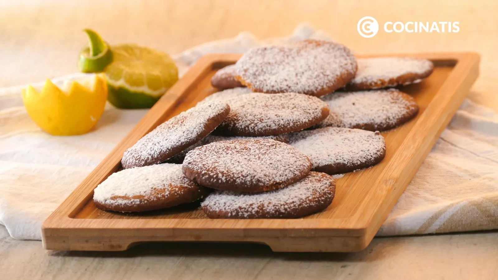

Ingredientes:
- 170 gramos de harina
- 50 gramos de almendra molida
- 30 gramos de azúcar
- 1 pizca de bicarbonato sódico
- 125 gramos de mantequilla a temperatura ambiente
- 60 gramos de miel
- 5 mililitros de zumo de limón
- 1 cucharadita de ralladura de limón
Preparacion:
- Pon en un bol la harina, la almendra molida, el azúcar, el bicarbonato, la miel y la mantequilla a temperatura ambiente.
- Ralla la cáscara de limón encima y después exprime el zumo de limón. Mezcla todo bien hasta obtener una pasta homogénea.
- Coge pequeñas porciones de masa, dales forma de bola y ponlas en una bandeja con papel de horno. Aplasta ligeramente con los dedos las bolas de masa.
- Precalienta el horno a 180ºC durante 10 minutos.
- Saca las galletas del horno y deja enfriar un rato. Espolvorea azúcar glas por encima y sirve las galletas.